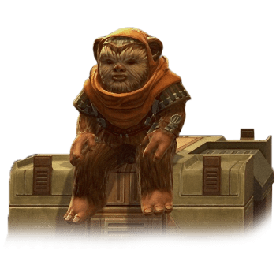

Ewok

Tratti degli Ewok
| Aumento dei punteggi caratteristica | Il punteggio di Destrezza aumenta di 2 e la Costituzione aumenta di 1 |
| Eta' | Gli ewok raggiungono la maturita' intorno ai 13 anni e vivono fino a circa 50 anni |
| Allineamento | Tendente al lato chiaro della forza |
| Taglia | Piccola |
| Velocita' | 7.5m |
| Specialisti di Armi Improvvisate | Puoi spendere 1 ora, anche nel mezzo di un riposo breve, per creare un'arma con materiali trovati nei dintorni. Puoi creare un'arma cinetica semplice ma il danno dell'arma subisce una penalita' di -1 |
| Olfatto Acuto | Ottieni vantaggio nelle prove di Saggezza (Percezione) che comprendono l'utilizzo dell'olfatto |
| Maschera Selvatica | Puoi nascondersi anche se sei parzialmente oscurato da: fogliame, pioggia fitta, nevicate, nebbia ed altri fenomeni naturali simili |
| Cultura Musicale | Sei competente nell'utilizzo di uno strumento a scelta |
| Survivalista Innato | Sei competente nelle prove di Natura e Sopravvivenza |
| Arrampicata in Pianta | Velocita' di Scalare 7.5m. Ottieni vantaggio nei tiri salvezza su Forza e nelle prove di abilita' Forza (Atletica) che coinvolgono lo scalare |
| Sottodimensionato | Non puoi utilizzare scudi pesanti, armi da guerra con la proprieta' a due mani a meno che non abbiano anche la proprieta' leggera e se un'arma da guerra ha la proprieta' versatile, puoi impugnarla solo a due mani |
| Linguaggi | Sai parlare, leggere e scrivere Ewokese. Sei in grado di comprendere il Galattico Base parlato e scritto ma non sai parlarlo |